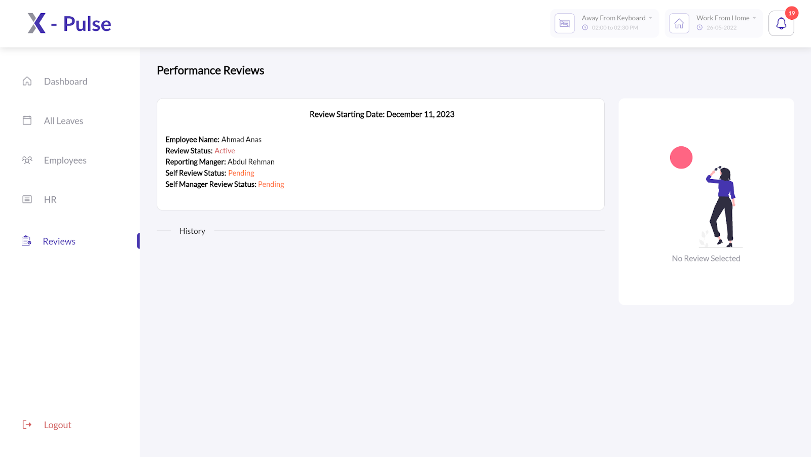

.._employee_review_cycle:
Employee Review Cycle¶
The X-pulse 360 review process imposes five responsibilities on each employee of the company:
Self Review
Review to Manager
Review Request
Self Review¶
As part of the self review process, you are required to review yourself following the steps below:
Log in to your X-Pulse account.
Click on Reviews button from left pane.

Click on the Performance Review available for the current quarter.
Click on Self-Review from the right pane.
Review yourself based on the following parameters:
Work Quality
Complexity & Ambiguity
Predictability of Delivery
Team Play
Comments (Optional)
Note
The fields marked * are necessary to fill. Once you’ve filled in the form, you can either save it as draft for later amendments or submit the form to move it to the Processing phase.
The Self Review process is completed once a review is Submitted by the employee for further processing by the respective manager.
Review To Manager¶
As part of Review to Manager process, you are required to review your reporting manager following the steps below:
Log in to your X-Pulse account.
Click on Review button from left pane.
Click on the Performance Review available for the current quarter.

Click on Your Review to Manager from the right pane.

Review your reporting manager based on the following parameters:
Work Quality
Complexity & Ambiguity
Predictability of Delivery
Team Play
Comments (Optional)
Note: The fields marked * are necessary to fill. Once you’ve filled in the form, you can either save it as draft for later amendments or submit the form to move it to the Processing phase.
The Review to Manager process is completed once a review is Submitted by the employee for further processing.
Review Request¶
This functionality is available only at the managerial level.The Review Request feature enables the managers to request a review for one or more of their team members who are still a part of their team however their quarterly job requirements compel them to work under different managers. To request a review of your team member from the relevant team manager, follow the steps below:
Log in to your X-Pulse account.
Click on the Reviews button from the left pane.
- Click on the Performance Review available for the current
quarter.
- From the left pane, select the team member whose review you need to
request from a different manager and select the relevant review quarter.

Click on Your Review to <name>.

Navigate to Redirect Review from the top right corner.

Select an Employee that you’d like to request review from.

Once you have requested a review of one or more of your team members, you can check its status by navigating to your team member(s) profile from the right pane.